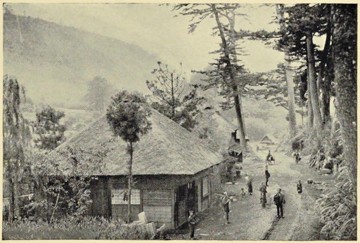

“A country road”
Japan: Described and Illustrated by the Japanese (1897)
Whatever may be our doubts as to the extent of the foreign influence, we can have none as to the loveliness of Japan, and the delight of travelling in the interior. When I left the country I had seen seven out of the eight largest towns; but it is not the weeks in the cities that live in my recollection, but the few days spent in the country districts. Japan is the traveller’s paradise. Through a strange medley of pines and palms, of rice and buckwheat, of bamboos and elms, of tea and cotton; through azalea thickets and camelia groves, across tobacco fields and past rocks covered with evergreen ferns of a hundred kinds, and crowned with grotesque remains; through tussac grass and forests of scarlet maple, and over mountains clad in rich greenery, you may journey in perfect peace, safe from robbery, safe from violence, safe even from beggars, never troubled, never asked for anything, except by a civil policeman for your passport, and that with the lowest of low bows.
English Influence in Japan (1876)
We see no beggars; we have been only twice asked for alms in Japan, and yet we are in the heart of the country, passing through scores of villages every day; no sign of poverty, or wealth, anywhere—really a sort of Arcadia.
Journal of a Lady’s Travels Round the World (1883)
A lovely morning, so we started at 8 a.m. accompanied by two friends to ride to Dai-butsz [in Kamakura], a distance of eighteen miles, through scenery so beautiful that one part of it is called “the plains of heaven,” and truly I doubt whether the human mind could picture to itself a fairer scene. The bright blue sea with its picturesque inlets on the one side, while on the other an undulating, richly wooded country, varied by the red autumnal tints of the maple, stretches away as far as the eye can reach, till the majestic Fusi-yama rises in the distance to cut the clear sky with its snowy peak. What a long sentence I have written! You must however excuse my becoming ecstatic, as I really think it was the loveliest ride I ever had, and no one can have an idea of the beauty of the country, who travels only by the carriage roads. Even more charming than the extensive view from the high ground, were the exquisite little bits which we came to at almost every turn, as we trotted cheerily along the narrow pathways.
Letters from China & Japan (1875)
We will now take a glance at scenery of a type which is common to most parts of Japan. The road runs on an embankment, some five or six feet high, between rice- (or paddy-) fields, which are almost invariably under two or three inches of water, and which cover all the level ground. Beyond these rise hills of marked outline, but of no great height, up which the rice-fields climb terrace above terrace until there is not a square foot of available ground unoccupied. At intervals we pass clusters of wooden huts, apparently deserted; but if we look carefully over the surrounding fields, we shall probably see the owners with their wives and children, with wicker baskets in their arms, up to their knees in mud and water. They are evidently working hard, but what the exact nature of their work is it is difficult to see. Jinriki-shas occasionally pass us on the road, their occupants being often asleep, and remaining so with a determination which is truly remarkable, considering the faulty nature of the road. Occasionally the monotony of the fields is broken by a bamboo-forest, over which the faintest breath of wind sends a wavy sheen as it reveals the silvery under-side of the leaves. Now and then the road is bordered on either side by those lofty pines of distorted shape which are so often represented in Japanese art. They twist and turn and stretch out their crooked arms in every direction, at times joining hands with their comrades on the opposite side of the road, as if taking part in some weird, fantastic dance, which is only interrupted for the moment to allow us to pass.
Japan: Its History, Traditions, and Religions (1880)
The thatched farmhouses in the valleys and on the hillsides, the roofs sometimes scarcely distinguishable from the hill itself, with trees and shrubs hiding their want of beauty, make pretty pictures. In the summer evenings the farmers sit on benches at the doors of their houses and smoke pipes, tell stories and exchange greetings with the passers-by. These farmers are very heavily taxed, and often rebel, causing much trouble to the princes and the general government.
The Sunrise Kingdom (1879)
◀ Street scenesSmells ▶